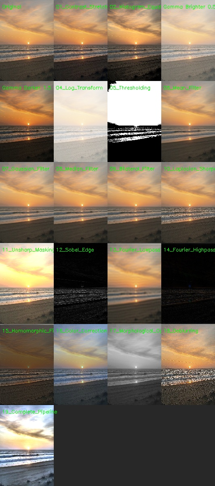
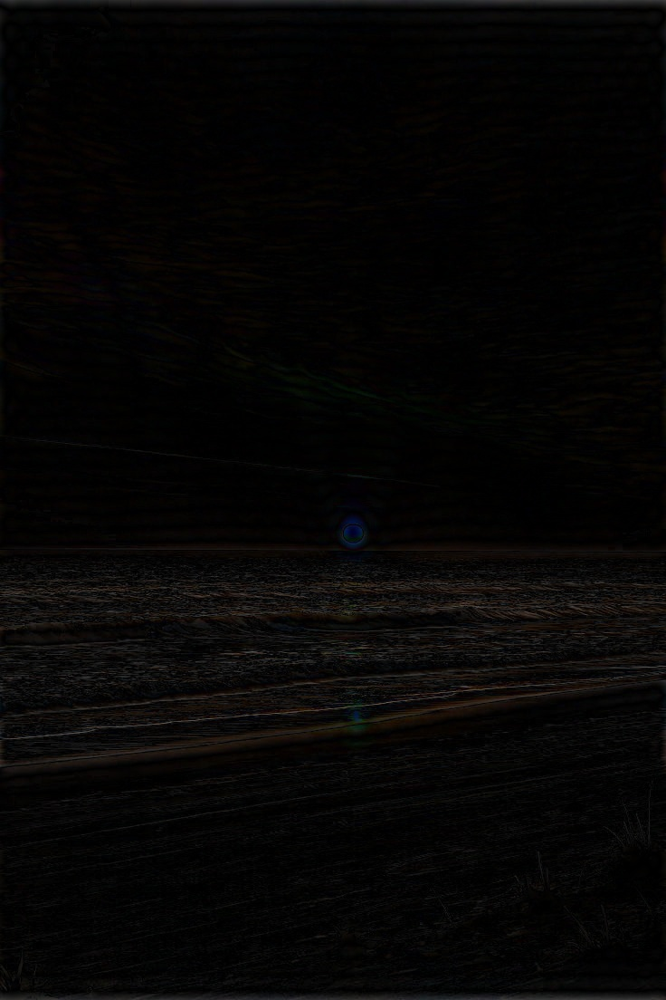

Image Enhancement Report with Source Code
Generated: 2026-01-20 21:33:41
Total images: 1
Processing Summary
| Image | Techniques Applied | Successful | Results Folder |
|---|---|---|---|
| input_image.jpg | 20/20 | 20 | Jump to details |
Image: input_image.jpg
Original Image
Original Image
Comparison Grid

All Techniques Comparison
Individual Techniques
1. 01_Contrast_Stretching
01_Contrast_Stretching
2. 02_Histogram_Equalization
02_Histogram_Equalization
3. 03a_Gamma_Brighter_0.5
03a_Gamma_Brighter_0.5
4. 03b_Gamma_Darker_1.5
03b_Gamma_Darker_1.5
5. 04_Log_Transform
04_Log_Transform
6. 05_Thresholding

05_Thresholding
7. 06_Mean_Filter
06_Mean_Filter
8. 07_Gaussian_Filter
07_Gaussian_Filter
9. 08_Median_Filter
08_Median_Filter
10. 09_Bilateral_Filter
09_Bilateral_Filter
11. 10_Laplacian_Sharpening

10_Laplacian_Sharpening
12. 11_Unsharp_Masking
11_Unsharp_Masking
13. 12_Sobel_Edge

12_Sobel_Edge
14. 13_Fourier_Lowpass
13_Fourier_Lowpass
15. 14_Fourier_Highpass

14_Fourier_Highpass
16. 15_Homomorphic_Filter
15_Homomorphic_Filter
17. 16_Color_Correction
16_Color_Correction
18. 17_Morphological_Operations

17_Morphological_Operations
19. 18_Deblurring
18_Deblurring
20. 19_Complete_Pipeline
19_Complete_Pipeline